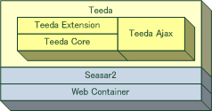

Welcome
Teedaは，Seasarプロジェクト発のJSF (JavaServer Faces) をベースとしたWebアプリケーションフレームワークです．
「JSF meets DI x AOP」というコンセプトの元，JSFの標準機能に加え， DIとAOPの機能をベースとした拡張機能を提供し，より良いWebアプリケーション開発を実現します．
Teedaは大きく分けて3つのモジュールから構成されています．

- Teeda Core
- Teeda Coreは，JSF1.1の実装です． JSFにおけるUIコンポーネントの管理に Seasar2 を利用するのが特徴です．
- Teeda Extension
- Teeda Extensionは，Teeda Coreをベースに， HTMLテンプレートと規約に基づいた拡張機能を提供します．
- Teeda Ajax
- Teeda Ajaxは，Ajaxに特化したライブラリで， Teeda CoreやTeeda Extensionとは独立して利用することも可能です．
Teedaの目指すゴール
Teedaは以下をゴールとして日々開発を続けています．
- Webアプリケーションの開発をもっとシンプルにし，ユーザが本当に開発すべきものに専念できるようにする．
- オープンに開発し，オープンな仕組みの中で常に提供し続ける．
- 自働化されたテストによってよくテストされており，ユーザが安心して使うことが出来る．
- POJO(Plain Old Java Object)中心の開発スタイルを提供する．
- Webアプリケーションとして必要な機能を一括して提供する．
News
- 2008/04/05
- Teeda 1.0.13 をリリースしました． ( ダウンロード ) ( Change Log )
- 2008/03/29
- Teeda 1.0.13-rc6 をリリースしました． ( ダウンロード ) ( Change Log )
- 2008/03/26
- ひがやすを著「 Seasar2によるスーパーアジャイルなWeb開発 」(技術評論社) が発売されました．
- 2008/03/21
- Teeda 1.0.13-rc5 をリリースしました． ( ダウンロード ) ( Change Log )
- 2008/03/07
- Teeda 1.0.13-rc4 をリリースしました． ( ダウンロード ) ( Change Log )
- 2008/02/28
- Teeda 1.0.13-rc3 をリリースしました． ( ダウンロード ) ( Change Log )
- 2008/02/26
- Teeda 1.0.13-rc2 をリリースしました． ( ダウンロード ) ( Change Log )
- 2008/02/18
- Teeda 1.0.13-rc1 をリリースしました． ( ダウンロード ) ( Change Log )
- 2008/02/18
- Teeda 1.0.12-sp1 をリリースしました． ( ダウンロード ) ( Change Log )
- 2008/02/05
- Teeda 1.0.12 をリリースしました． ( ダウンロード ) ( Change Log )
- 2008/01/28
- Teeda 1.0.12-rc2 をリリースしました． ( ダウンロード ) ( Change Log )